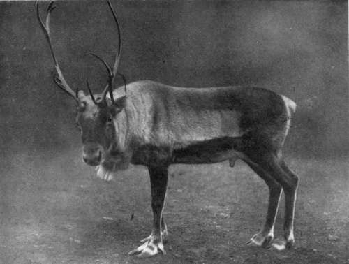

The Barren-Ground Caribou. Part 4
Description
This section is from the book "Wild Life In Canada", by Angus Buchanan. Also available from Amazon: Wild Life in Canada.
The Barren-Ground Caribou. Part 4
I took down my rifle and we filed out of the cabin and started off.
Outside the night-sky was dull and grey, but a fair light was thrown on the snow by the cloud-obscured moon, which was full.
Led by Gewgewsh, one of the best and most active hunters in the territory, the party trailed ahead in single file, at great speed and without any seeming effort. With unerring knowledge of " lie " of land, and every nature of obstacle to avoid, those Indians chose the easiest and quickest line of travel to a definite objective ahead. As they travelled one could hear the low tones of their hurried laughter and guttural speech, for excitement was intense among the Indians. They were keen sportsmen, keen as children on an exciting game, and above all they had been talking and dreaming of Caribou for weeks, and they knew that to-day they would kill and have meat at last, and after a summer of fish-food their palates, and the palates of their squaws and papooses, were languishing for fresh meat.
About 5.30 a.m. the party reached a chain of small lakes which it was necessary to cross; unmapped lakes that linked up with Reindeer Lake further south. Those lakes had a strong current running through them, and because of this current the Indians would not risk crossing on the lake ice at present-a month later, yes! Therefore the party halted at a narrow neck between two lakes, through which open, fast-flowing water passed. Here it was planned to cross by raft; and speedily, with the faultless precision of men who knew exactly what they wanted, some trees were felled and the construction of a raft begun. Eight stout logs were cut and laid together over cross-poles at either end and bound firmly in position. This done another tier of logs was placed on top so that the total timbers would float the weight of a man. The completed raft was about 2 ft. 6 in. x 9 ft. 6 in. Satisfied all was then in readiness to go forward, and as time was not pressing, for it was still night, everyone adjourned to the blazing fire which two of the Indians had kindled, and partook of tea and food. How welcome was fire and tea in the bitter cold morning to both Indian and white.
The picture about the fire was striking. A group of fur-clad, gracefully athletic-looking Indians standing or squatting near their firearms beneath the gloom of dark-boughed spruce forest which night had not yet left; feather-flaked snow falling lightly, stippling the air in its sustained, unhurried descent, and whitening the hooded heads and shoulders of the men; inside the circle leaped the eager flames of the log-fire, lightening the underside of the nearest snow-laden spruce boughs, and casting a glowing touch of light on the meditative, strong, bronze-dark faces of the Redskins.
Before long it was decided to move on. It was then close upon dawn, which would be about 7 a.m., and clear daylight about 8 a.m. The raft was carried to the water's edge and floated on the stream, a rope attached to it, and then Gew-gewsh poled his way skilfully over to the opposite shore. Once across he tied another rope to the raft; and then, by see-saw method, it was pulled from shore to shore, each time carrying from one side a single passenger, until all were across.
Once all were on the far bank conversation ceased and the party moved quietly inland expectant of soon meeting Caribou. Coming, after a time, to a small inland lake, the first indications of Caribou were found-fresh hoof-marks on the smooth snow surface. Thereupon the party changed its composition, Gewgewsh and another Indian going off in a north-east direction to follow up the fresh tracks, while the main party continued south-east. The two hunters had barely left us when we heard them commence to shoot. Six shots they fired; one of which hit the object, as was easy to infer by the odd sound of the dull plunk of the bullet as it struck home. Soon the main party sighted Caribou-three bucks on an open pine-wood hillside. Upon those a regular fusilade of ineffective shots was fired by the excited Indians ; and then a general rush to head them off, as they crossed running west, and more shots during which one Caribou was brought down. The animal was cut and disembowelled where it had fallen, and left unconcernedly to be gathered later without an apparent glance to establish its location in forest that I would have had to blaze a tree or two and take careful bearings if I was to be sure of ever finding the spot again. The shooting of the Indians-never brilliant-up to the present had been particularly bad. They are, however, seen to better advantage when hunting more or less alone, and when not unbalanced by over-eagerness to secure first blood ; as they this day were. Continuing, the party shortly afterwards again dismembered ; three of the Indians going off south-east, and the remaining two and self heading now more south-west. We sighted two Caribou standing in an open space, but they jumped off into the scrub so hurriedly that it was impossible to shoot. About this time the two Indians with me (the man who had asked me to come and another) appeared anxious to go off by themselves. Until now I had been an interested spectator, but not without inner excitement and inclination to try my luck, so suspecting nothing, and assuming we would meet again at the raft-crossing, I wished them good luck and struck into the forest alone. I had gone no great distance before I came on three, or four, Caribou feeding in low-lying scrub forest. Among them was a fine buck, and this animal I succeeded in bringing down, while the others vanished through the timber. My quarry was not dead, but it was not difficult to track him to where he had collapsed in a muskeg bottom a short distance away, and dispatch him with a fatal shot.
A Male Cabibou In Captivity In London
Continue to: